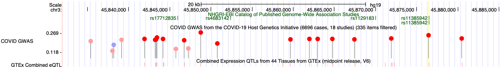
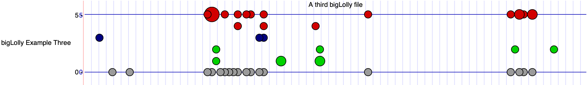

The bigLolly format uses a standard bigBed file that is used to generate a lollipop graph where
the position of a lollipop circle corresponds to a genomic coordinate. By default, the score
is used to decide how high to draw the lollipop, but there are trackDb options to specify which
fields to use for the height and width of the lollipop, as well as to draw lines on the graph.
BigLolly trackDb options arguments are noStems, lollySizeField,
lollyMaxSize, lollyField, yAxisLabel, and
yAxisNumLabels. These options are also described in the
trackDb help doc.
This format is useful for displaying small genomic features such as sequence variants, as it provides two ways to characterize features and make them more visible -- stem height and radius -- in addition to color. The lollipop graph type can be used to annotate bases for variants, RNA editing, Selenocysteines, frameshifts, or any other reason.

The bigBed files used in bigLolly type are in an indexed binary format. The main advantage of this format is that only those portions of the file needed to display a particular region are transferred to the Genome Browser server. The bigLolly file remains on your local web-accessible server (http, https or ftp), not on the UCSC server, and only the portion needed for the currently displayed chromosomal position is locally cached as a "sparse file". If you do not have access to a web-accessible server and need hosting space for your bigLolly files, please see the Hosting section of the Track Hub Help documentation.
Any bigBed file can be displayed as a bigLolly. See bigBed format.
The following autoSql definition is an example on how to specify bigLolly files. This
definition, contained in the file bigLolly.as,
is pulled in when the bedToBigBed utility is run with the
-as=bigLolly.as option.
table bigLolly
"bigLolly lollipops"
(
string chrom; "Reference sequence chromosome or scaffold"
uint chromStart; "Start position in chrom"
uint chromEnd; "End position in chrom"
string name; "dbSNP Reference SNP (rs) identifier or :"
uint score; "Score from 0-1000, derived from p-value"
char[1] strand; "Unused. Always '.'"
uint thickStart; "Start position in chrom"
uint thickEnd; "End position in chrom"
uint color; "Red (positive effect) or blue (negative). Brightness reflects pvalue"
double pValueLog; "-log10 p-value"
) The first 9 fields of this bigLolly format are the same as the first 9 fields of the standard BED format. The pValueLog field provides a numeric field for stem height.
In this example, you will create a bigLolly custom track using an existing bigBed file, located on the UCSC Genome Browser http server. By default the score field is used to define the lollipop height. This file contains data for the hg38 assembly.
To create a custom track using this bigBed file:
track type=bigLolly name="bigLolly Example One" description="A bigLolly file" bigDataUrl=http://genome.ucsc.edu/goldenPath/help/examples/bigBedExample3.bb visibility=fullIn this example, you will create your own bigBed file to display as a bigLolly from an bed file, using an extra field to define the height of the lollipops.
bedToBigBed
utility.bedToBigBed utility to create a bigBed file from your sorted BED file, using
the bigLollyExample2.bed file and chrom.sizes files created above.
bedToBigBed -as=bigLollyExample2.as -type=bed9+1 bigLollyExample2.bed hg38.chrom.sizes bigLollyExample2.bb
track type=bigLolly name="bigLolly Example Two: SNP data" description="A second bigLolly file" bigDataUrl=http://genome.ucsc.edu/goldenPath/help/examples/bigLollyExample2.bb lollyField=pValueLog visibility=full
In this example, you will create your own bigBed file to display as a bigLolly from a bed file with the size of the lollipop defined by
an extra field (lollySizeField=lollySize) where the numbers in this field are similar to a radius and define circle size.
To avoid large circles from being clipped, the setting lollyMaxSize=10 ensures circles of size 10 fully display. Also, to
turn off the lollipop stems, the setting lollyNoStems=on is added. Finally, the settings yAxisLabel.0="0 on 30,30,190 0"
and yAxisLabel.1="5 on 30,30,190 5" adds labels and lines on the y axis where 30,30,190 defines the color.
bedToBigBed
utility.bedToBigBed utility to create a bigBed file from your sorted BED file, using
the bigLollyExample3.bed file and chrom.sizes files created above.
bedToBigBed -as=bigLollyExample3.as -type=bed9+1 bigLollyExample3.bed hg38.chrom.sizes bigLollyExample3.bbtrack type=bigLolly name="bigLolly Example Three" description="A third bigLolly file" bigDataUrl=http://genome.ucsc.edu/goldenPath/help/examples/bigLollyExample3.bb lollySizeField=lollySize visibility=full yAxisLabel.0="0 on 30,30,190 0" yAxisLabel.1="5 on 30,30,190 5" lollyMaxSize=10 lollyNoStems=on
Custom tracks can also be loaded via one URL line. This link loads the same bigLolly.bb track and sets additional display parameters from Example 1 in the URL:
http://genome.ucsc.edu/cgi-bin/hgTracks?ignoreCookie=1&db=hg38&position=chr21:17,002,145-17,159,243&hgct_customText=track%20type=bigLolly%20name=Example %20bigDataUrl=http://genome.ucsc.edu/goldenPath/help/examples/bigBedExample3.bb %20visibility=fullIf you would like to share your bigLolly data track with a colleague, learn how to create a URL link to your data by looking at Example #6 on the custom track help page.
Because the bigLolly files are an extension of bigBed files, which are indexed binary files, it can be difficult to extract data from them. UCSC has developed the following programs to assist in working with bigBed formats, available from the binary utilities directory.
bigBedToBed — converts a bigBed file to ASCII BED format.bigBedSummary — extracts summary information from a bigBed file.bigBedInfo — prints out information about a bigBed file.As with all UCSC Genome Browser programs, simply type the program name (with no parameters) at the command line to view the usage statement.
If you encounter an error when you run the bedToBigBed program, check your input
file for data coordinates that extend past the the end of the chromosome. If these are present, run
the bedClip program
(available here) to remove the problematic
row(s) in your input file before running the bedToBigBed program.